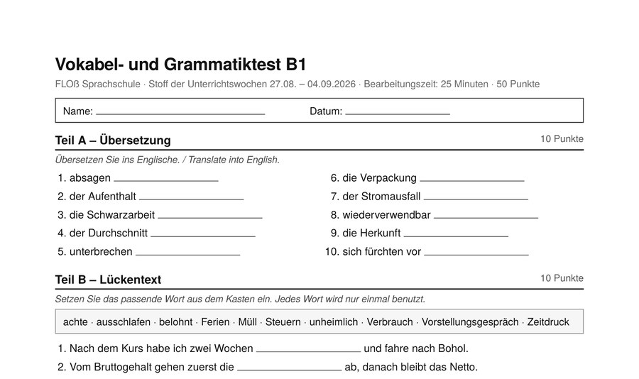
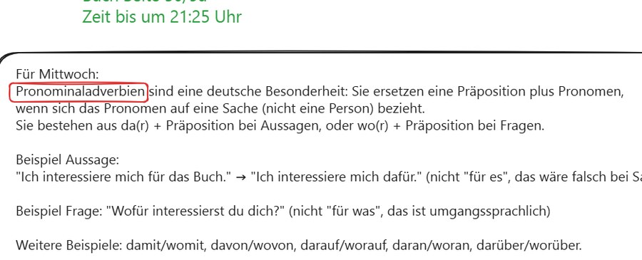
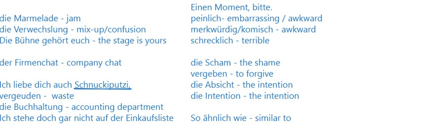
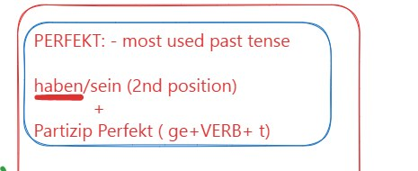
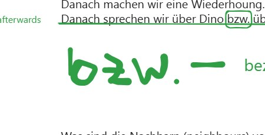
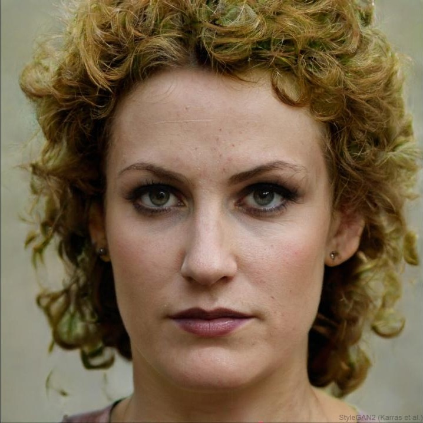
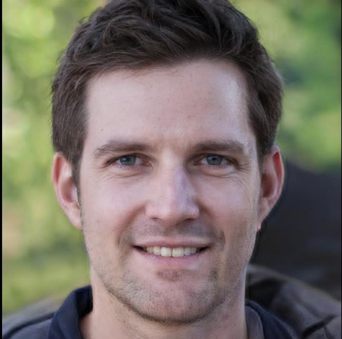
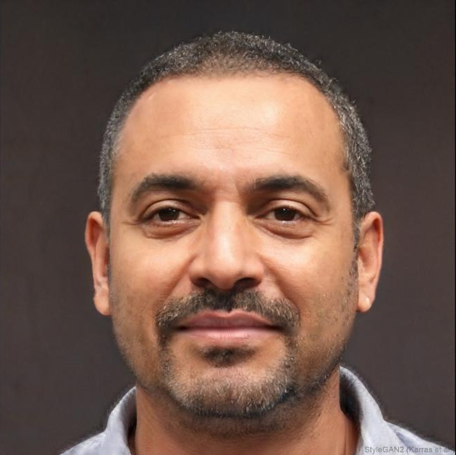

Deutsch lernen, das dich wirklich weiterbringt
Wir bereiten Filipinos sprachlich auf Ausbildung, Pflegeberuf und Arbeit im deutschsprachigen Raum vor — persönlich, intensiv, ehrlich.
We prepare Filipinos linguistically for vocational training, nursing careers and work in German-speaking countries — personal, intensive, honest.
Wie FLOß entstanden ist
How FLOß came to be
Bevor es FLOß gab, war Lion Full-Stack-Webentwickler — die Karriere lief, aber sinnstiftend fühlte sie sich nicht an. Anfang 2025 kam er als Deutschlehrer nach Cebu, mit dem Plan, beim Aufbau einer bestehenden Sprachschule zu helfen. Schnell wurde klar: Qualität und Ehrlichkeit gegenüber den Schülern hatten dort keine Priorität. Also ging er einen eigenen Weg — mit einem klaren Ziel: Filipinos zu helfen, ein besseres Leben zu verwirklichen.
Before FLOß, Lion was a full-stack web developer — the career was going fine, but it didn't feel meaningful. He moved to Cebu in early 2025 as a German teacher, originally planning to help build an existing language school. It quickly became clear that quality and honesty toward students weren't the priority there. So he built something of his own, with one clear purpose: helping Filipinos build a better life.
So entstand FLOß — mit einem klaren Anspruch: Unterricht, der fordert statt nur unterhält, und eine Schule, in der jeder Schüler einen Namen hat statt einer Nummer. Heute unterrichtet ein kleines Team aus muttersprachlichen Lehrern Intensivkurse von A1 bis C2, unterstützt von KI-gestützten Lernmethoden — darunter diese kostenlose Grammatik-Plattform.
That's how FLOß was born — built on one clear standard: teaching that challenges rather than just entertains, and a school where every student has a name, not a number. Today a small team of native-speaking teachers runs intensive A1–C2 courses, supported by AI-assisted learning tools — including this free grammar platform.
Warum wir das tun
Why we do this
Der deutsche Arbeitsmarkt sucht Fachkräfte. Unsere Schüler suchen eine echte Chance. Gutes Deutsch ist die Brücke dazwischen — und die bauen wir, Lektion für Lektion.
The German labour market needs skilled workers. Our students are looking for a real opportunity. Good German is the bridge between the two — and we build it, lesson by lesson.
Unsere Werte
What we stand for
Persönliche Verbindung
Jeder Schüler hat einen Namen, keine Nummer. Kleine Klassen, echte Aufmerksamkeit, Lehrer, die nachfragen, wenn's mal nicht rundläuft.
Every student has a name, not a number. Small classes, real attention, teachers who check in when something's off.
Ehrlichkeit & Schutz
Keine Diskriminierung, kein Mobbing, kein Wegsehen. Probleme werden sofort angesprochen — nicht ausgesessen.
No discrimination, no bullying, no looking away. Problems get addressed immediately, never ignored.
Ganzheitliches Wachstum
Wir unterrichten nicht nur Grammatik. Disziplin, Selbstvertrauen und Lebenskompetenz gehören für uns genauso zum Unterricht.
We don't just teach grammar. Discipline, confidence and life skills are part of every course.
So sieht das bei uns aus
What it actually looks like — real excerpts, no student names





Top Kurse zu Top Preisen
Top courses at top prices
Das Team
The team
Lion
Unterrichtet, entwickelt das Curriculum und baut die KI-gestützten Lerntools von FLOß.
Johannes
Unterrichtet Intensivkurse und begleitet Schüler durch die Prüfungsvorbereitung.

Gelai
Erste Ansprechpartnerin für Schüler — Organisation, Kommunikation, Terminplanung.

Friedrich
Unterstützt bei Tools und Reichweite, damit mehr Schüler den Weg zu FLOß finden.

Hartmut
Lehrer mit 35 Jahren Erfahrung, außerdem Lektor und Journalist — sichert die sprachliche und inhaltliche Qualität.
Katrin
Erste Anlaufstelle für Fragen rund um Ausbildung und Arbeit vor Ort in Deutschland.
John-Dave
Erzählt, was bei FLOß wirklich passiert — auf Social Media und darüber hinaus.
Bereit für den nächsten Schritt?
Sichere dir einen Platz im nächsten Intensivkurs — oder schreib uns einfach mit deinen Fragen.
fideslinguaortussolertia@gmail.com · +63 965 365 4154